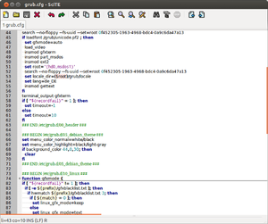
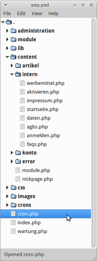

SciTE
Dieser Artikel wurde für die folgenden Ubuntu-Versionen getestet:
Ubuntu 16.04 Xenial Xerus
Ubuntu 14.04 Trusty Tahr
Zum Verständnis dieses Artikels sind folgende Seiten hilfreich:
SciTE  ist ein übersichtlicher und mächtiger Texteditor. Als ressourcenschonender Editor mit wenigen Abhängigkeiten ist SciTE ein beliebter Texteditor bei Nutzern, die Wert auf schlanke, aber funktionsreiche Programme legen.
ist ein übersichtlicher und mächtiger Texteditor. Als ressourcenschonender Editor mit wenigen Abhängigkeiten ist SciTE ein beliebter Texteditor bei Nutzern, die Wert auf schlanke, aber funktionsreiche Programme legen.
Durch viele Funktionen für das Arbeiten mit Quellcode kann der Editor als kleine Entwicklungsumgebung angesehen werden. So bietet SciTE neben Syntaxhervorhebung, Zuklappen von Funktionen und automatischem Einrücken Möglichkeiten zum Ausgeben, Kompilieren und zur Fehlersuche in Programmen verschiedener Programmiersprachen. Mehrere Dateien können in Reitern (Tabs) geöffnet werden und als Sitzung gespeichert werden.
Installation¶
Folgendes Paket muss installiert werden [1]:
scite (universe)
 mit apturl
mit apturl
Paketliste zum Kopieren:
sudo apt-get install scite
sudo aptitude install scite
Benutzung¶
 SciTE kann man bei Ubuntu-Varianten mit einem Anwendungsmenü über "Entwicklung → SciTE" oder mit folgendem Befehl starten [2]:
scite
Die Bedienung als Texteditor unterscheidet sich im Grunde nicht von den Standard-Editoren der Ubuntu-Derivate und ist am ehesten mit gedit und Geany zu vergleichen.
Alle Befehle zum Arbeiten stehen in der Menüleiste, für die meisten Aktionen gibt es Tastenkürzel. SciTE startet standardmäßig mit englischer und sehr schlichter Benutzeroberfläche. Unter "Languages" ("Hervorhebung" ) wird die gewünschte Syntaxhervorhebung ausgewählt und nicht etwa die Sprache der Oberfläche. Veränderungen am Programmfenster unter "View" ("Ansicht" ) gelten nur für dieses Fenster und nur bis zum Schließen.
Sprache¶
Ist systemweit die deutschsprachige Oberfläche gewünscht, reicht es die Datei locale.de.properties auf scite-files herunterzuladen und als locale.properties mit Root-Rechten [3] nach /usr/share/scite/ zu verschieben.
Mehrsprachig wird SciTE, wenn man alle benötigten Sprachdateien herunterlädt und mit Root-Rechten im Ordner /usr/share/scite/ speichert. So kann jeder die gewünschte Sprachdatei in den eigenen Benutzer-Einstellungen selbst festlegen.
Konfiguration¶
Die für die Grundeinstellungen verantwortlichen globalen Konfigurationsdateien befinden sich in /usr/share/scite/SciTEGlobal.properties. Diese kann aber jeder für sich über "Optionen → Benutzer-Einstellungen bearbeiten" ("Options → Open User Options File" ) in der Datei ~/.SciTEUser.properties überschreiben.
| Auswahl von Startoptionen aus SciTEDoc | |
| Schlüssel | Beschreibung |
locale.properties | locale.XX.properties benennt die lokalisierte Sprachdatei. Diese muss in /usr/share/scite/ vorhanden sein. XX wird durch die Länderkennung nach ISO 639-1 ersetzt. |
position.maximize | Mit position.maximize=1 wird SciTE maximiert gestartet. |
position.leftposition.topposition.widthposition.height | Positions- und Größenangaben des Fensters werden in Pixel angegeben. Diese Werte werden auch bei position.maximize übergeben und wirken sich erst bei "Maximierung aufheben" aus.Bei zu großen Werten wird das Fenster nur bis an den Rand der Arbeitsfläche geschoben oder gedehnt. |
toolbar.visibletoolbar.usestockicons | toolbar.visible=1 blendet die Werkzeugleiste beim Start ein; um die Icons der Desktopumgebung zu nutzen wird toolbar.usestockicons=1 gesetzt |
line.margin.visibleline.margin.width | Eine Spalte für die Zeilennummern bewirkt line.margin.visible=1. Deren Breite wird durch die Anzahl der Zeichen bestimmt. Bei line.margin.width=3+ werden durch das angehängte Plus auch vier- und mehrstellige Zahlen vollständig angezeigt. |
Beispielkonfiguration¶
## Deutsche Sprachdatei für diesen Benutzer. Muss in /usr/share/scite/ liegen. locale.properties=locale.de.properties ## Breite und Höhe des Fensters in Pixeln festlegen, maximiert starten position.width=1200 position.height=900 position.maximize=1 ## Werkzeugleiste anzeigen, Icons vom Desktop-Theme benutzen toolbar.visible=1 toolbar.usestockicons=1 ## nichtproportionale Schrift für alle Texte font.base=$(font.monospace) font.small=$(font.monospace) font.comment=$(font.monospace) font.text=$(font.monospace) font.text.comment=$(font.monospace) font.embedded.base=$(font.monospace) font.embedded.comment=$(font.monospace) font.vbs=$(font.monospace) ## Zeilennummern anzeigen, Ziffernanzahl (hier mindestens 4, mehr wenn nötig) festlegen line.margin.visible=1 line.margin.width=4+ ## Pfadanzeige ausblenden, Statusbar anzeigen, Anzeige personalisieren kompletten Pfad unter der Tableiste anzeigen pathbar.visible=0 statusbar.visible=1 statusbar.text.1=\ $(FilePath) | $(FileDate) - $(FileTime) |\ | $(BufferLength) Zeichen, $(NbOfLines) Zeilen | Position $(LineNumber)/$(ColumnNumber) |\ | Attribute:$(FileAttr) | Highlighting:$(Language) | Eingabemodus:$(OverType)
Programmierung¶
Über den Menüpunkt "Extras" können die Funktionen zum Starten, Kompilieren und Debuggen (Fehlersuche) von Programmen aufgerufen werden. Dabei öffnet sich eine Seitenleiste mit der Ausgabe, die auch über das Menü geöffnet werden kann:
"Ansicht → Ausgabe"
Dieses Ausgabefenster ist eine Terminal-Emulation, kann also auch als Eingabe verwendet werden.
Projektverwaltung¶
Hinweis:
Für umfangreiche Projekte sollte besser eine der hier im Wiki vorgestellten Entwicklungsumgebungen verwendet werden.
Sitzung¶
SciTE bietet lediglich die Möglichkeit, mehrere Dateien als Sitzung zu verwalten:
"Datei → Sitzung laden..."
"Datei → Sitzung speichern..."
SciteProj¶
Hinweis:
Diese Beschreibung bezieht sich auf die Version 0.7.08. Neuere Versionen arbeiten direkt im Dateisystem und werden hier nicht behandelt.

Für kleinere Projekte eignet sich die schlichte Projektverwaltung SciteProj . Sie wird verwendet, um Dateien gruppiert anzuzeigen und so einen einfacheren Zugang durch SciTE zu haben.
Folgendes Paket muss installiert werden [1]:
sciteproj (universe)
mit apturl
Paketliste zum Kopieren:
sudo apt-get install sciteproj
sudo aptitude install sciteproj
SciteProj bindet sich nicht automatisch in ein Startmenü ein und wird daher über den folgenden Befehl gestartet [2]:
sciteproj
Arbeitsweise¶
In SciteProj fasst man Verweise zu Dateien innerhalb eines Projektes zu Gruppen zusammen. Dabei ist der Speicherort unerheblich, das Programm speichert für jede Datei die Gruppenzugehörigkeit und den Speicherort in der Projekt-XML. Dadurch sind Dateioperationen wie Löschen, Verschieben, Kopieren und Umbenennen nicht möglich. Per Doppelklick öffnet SciTE dann die echten Dateien.
Benutzung¶
Um ein Projekt zu starten, wird das noch leere Projekt über "File → Save Project" im Ordner der Wahl gespeichert. Über "Edit → Create Group" werden Gruppen erstellt. Über "Edit → Add File" werden Dateien eingefügt, die bei Bedarf in eine andere Gruppe verschoben werden. Per Doppelklick wird die Datei in SciTE geöffnet.
Das Erstellen eines Projekts kann automatisiert werden, wenn alle Dateien in einem Ordner gespeichert sind. Dazu wird in diesem Ordner folgender Befehl ausgeführt:
sciteproj --generate DATEINAME [ORDNERTIEFE]
SciteProj erstellt ein sauber gruppiertes XML mit allen Dateien in diesem Ordner und seinen Unterordnern. Ein Projekt der lokalen Webseite auf dem eigenen LAMP-Server unter ~/public_html/webseite/ wird im Terminal [4] erstellt:
cd ~/public_html/webseite sciteproj --generate SciteProj.xml 6
SciteProj scannt dabei sechs Ordner tief. Lässt man die Zahl weg, gilt der voreingestellte Wert von vier.
Konfiguration¶
Unter "Edit → Edit Options" wird Konfigurationsdatei geöffnet, in der die Darstellung und einige Verfahrensweisen festgelegt werden können. Eine deutsche Sprachdatei für SciteProj gibt es derzeit nicht.
 Programmübersicht
Programmübersicht- Erstellt mit Inyoka
-
 2004 – 2017 ubuntuusers.de • Einige Rechte vorbehalten
2004 – 2017 ubuntuusers.de • Einige Rechte vorbehalten
Lizenz • Kontakt • Datenschutz • Impressum • Serverstatus -
Serverhousing gespendet von